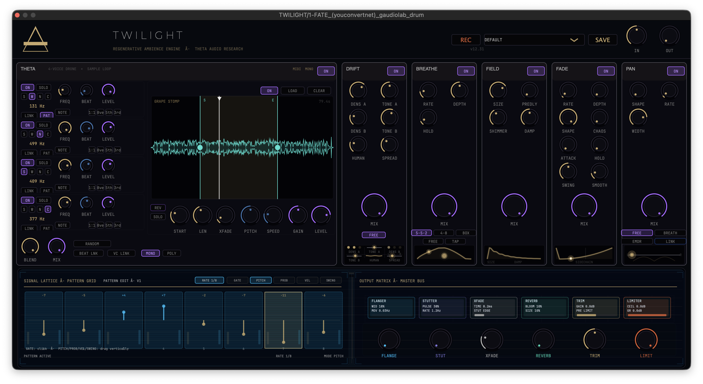

TWILIGHT
Ambience Generator
"I built T W I L I G H T because I wanted a tool that lived in that moment just before sleep—that drifting where the mind starts inventing reality. What I ended up with was not only an amazing musical tool, but the ambience generator i've always wanted for film."

SYSTEM_READY
LAB NOTE #001 // HYPNAGOGIC_STABILITY
The 6.2 Hz threshold has been stabilized. Research into ARCHIVE-03 protocols suggests that respiratory synchronization enhances the subjective depth of the generated ambience.